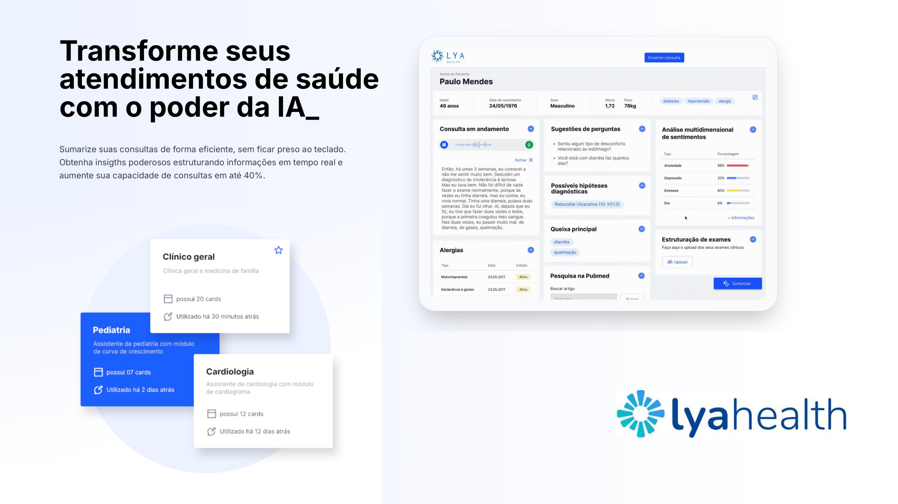
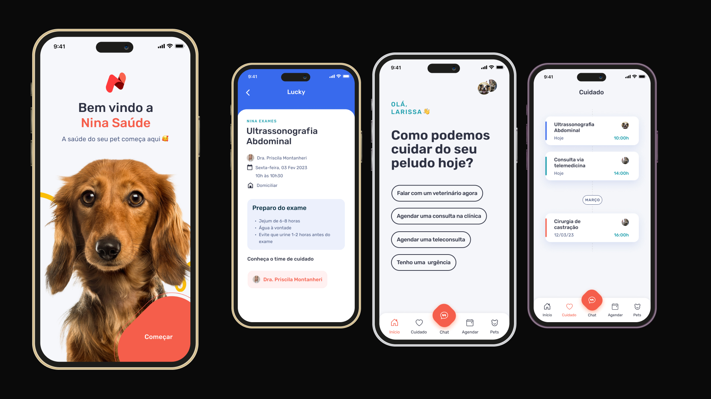
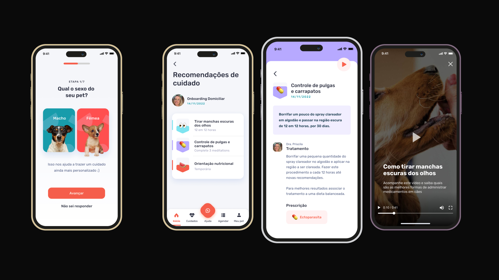
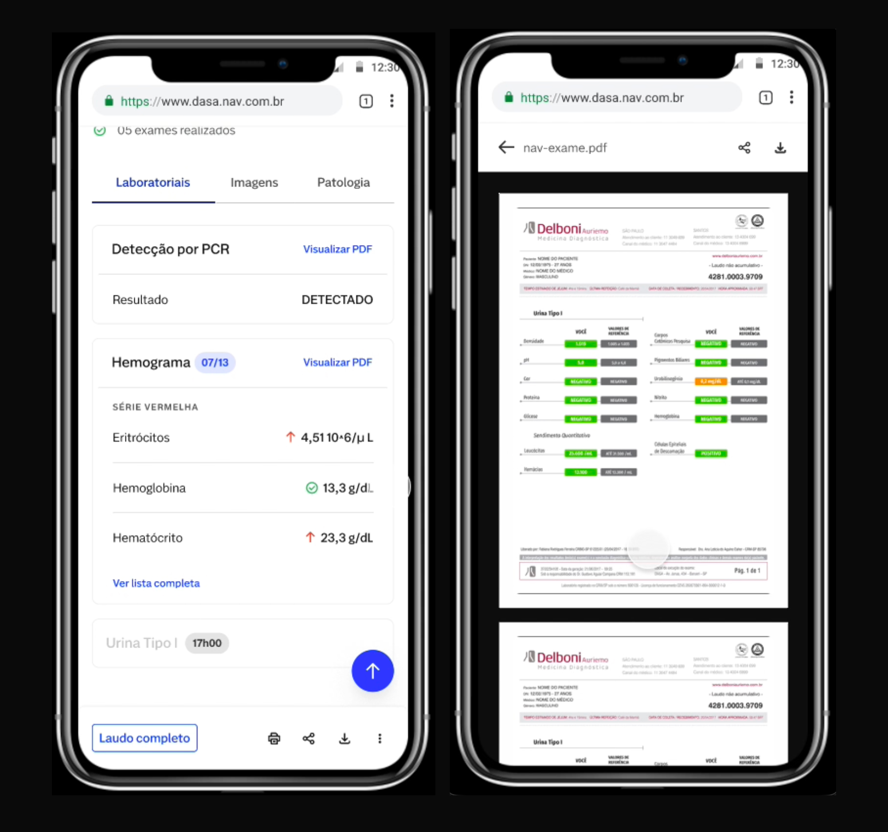

Co-designing two startups from zero: an AI-native clinical assistant for doctors, and a comprehensive pet healthcare app — both built with a strong design-first culture.
Early-stage AI-native healthtech — a clinical assistant that transforms healthcare appointments with the power of AI.
Early-stage pet healthcare startup — a comprehensive app connecting pet owners with veterinary care, telemedicine, and health management.
Early-stage healthtech — built and scaled the first Design organisation from zero, leading product strategy, AI-driven lab data solutions, and predictive healthcare models.
Startup 01
Transform your healthcare appointments with the power of AI. Summarise consultations efficiently, obtain powerful insights by structuring information in real time, and increase your consultation capacity by up to 40%.
The Product
Lya Health is designed for doctors — giving them an AI-powered co-pilot during every patient consultation. The app listens, structures, and surfaces insights in real time, freeing doctors from the keyboard so they can focus entirely on the patient.
Doctors can choose from speciality-specific assistants — general practitioner, paediatrics, cardiology — each pre-configured with the relevant clinical cards and logic.
Startup 02
Your pet's health starts here. A comprehensive pet healthcare app that connects pet owners with veterinary professionals — for telemedicine, in-clinic scheduling, and personalised care management.
The Product
Nina Pet Health is built around the idea that pets deserve the same quality of care management that humans have. The app guides owners through onboarding their pet, connects them to a dedicated care team, and tracks health across the pet's entire life.
The experience is warm, playful, and deeply practical — combining the emotional bond owners have with their pets with the clinical rigour needed to keep them healthy.


Startup 03
Built and scaled the first Design organisation from zero — leading design team, product strategy, research, design operations, culture development, and digital transformation initiatives across a growing healthtech platform.
The Work
Led end-to-end discovery, strategic definition, and zero-to-one product design initiatives — translating complex business challenges into scalable digital products. Scaled the design organisation from zero to approximately 15 people, establishing team structure, culture, and processes from scratch.
Implemented AI-driven solutions to structure and standardise laboratory test data across multiple brands, systems, and formats — a foundational layer enabling consistency at scale across the platform.
